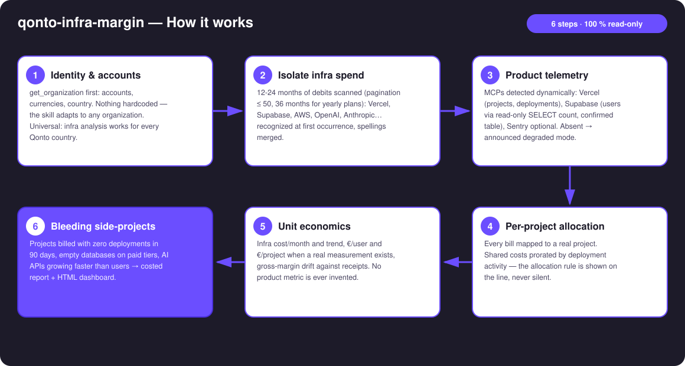
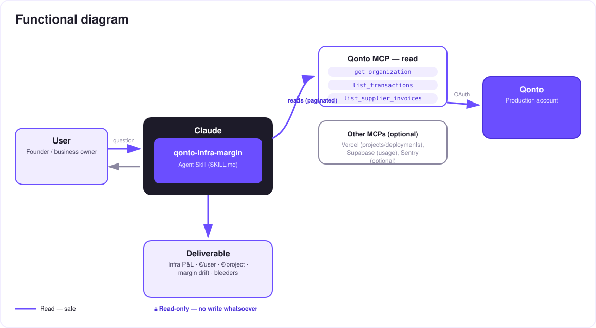

What does your infra really cost, per user? — everyone knows their MRR; nobody knows their infra unit economics.
A SaaS founder recites their MRR by heart. Their infra cost per user? Silence. Vercel, Supabase, OpenAI and AWS bills drown in the card debits, and gross margin drifts with nobody watching. The skill answers with what actually left the bank account:
Vercel, Supabase, OpenAI, AWS, Scaleway, OVH… recognized at the first occurrence, spellings normalized, grouped by family: cloud, data, AI, observability, tooling.
From connected MCPs: Vercel (projects, deployments), Supabase (projects, users via read-only SELECT count), Sentry optional.
€/user, €/project (proration announced), month-by-month gross-margin drift against receipts.
Side-projects billed with zero deployments in 90 days, empty databases on paid tiers, AI spend growing faster than users.
Would someone use this on a Monday morning? It's the question every technical founder asks in the shower and never answers.
| Prerequisite | Detail | Required |
|---|---|---|
| Qonto production account | Adapts to any organization — get_organization first, nothing hardcoded | ✅ |
| Country | Universal — identical analysis for every Qonto country (FR, DE, ES, IT, AT, NL, BE, PT). Truth = the account-side debit (EUR side of USD bills, FX included) | ℹ️ detected |
| Qonto MCP connected | Official connector (claude.ai / Claude Desktop), OAuth login | ✅ |
| Vercel MCP | list_projects + list_deployments → per-project allocation, dead projects detected | ⭕ recommended — announced degraded mode otherwise |
| Supabase MCP | list_projects + execute_sql (read-only SELECT count, user-confirmed table) → measured €/user | ⭕ recommended — announced degraded mode otherwise |
| ≥ 12 months of history | Trends and yearly plans only show over 12–36 months; below that, honest degradation | ⭕ |

AWS EMEA SARL = AMZN WEB SERVICES = AWS; OPENAI *CHATGPT = OpenAI)emitted_at, not settled_at (1–2 day gap)
100% read-only, on both sides. Qonto side: no write tool is ever called — nothing to approve, nothing executed. Product side: execute_sql is capped at single read-only SELECT count queries, on a table the user confirms before it runs — never DDL/DML, never a guessed table.
| Family | Typical vendors (examples, never exhaustive) |
|---|---|
| Cloud & hosting | AWS, Google Cloud, Azure, Scaleway, OVHcloud, Hetzner, DigitalOcean, Fly.io, Railway, Render, Heroku |
| Frontend & edge | Vercel, Netlify, Cloudflare |
| Data & backend | Supabase, MongoDB Atlas, Neon, PlanetScale, Firebase, Upstash |
| AI APIs | OpenAI, Anthropic, Mistral, Replicate, ElevenLabs, fal.ai, Hugging Face |
| Observability | Sentry, Datadog, Better Stack, Grafana Cloud |
| Dev tooling | GitHub, GitLab, Docker, npm, JetBrains |
| Metric | Example (fictional) | Condition |
|---|---|---|
| Infra cost / month + trend | €412/month, +18% over 12 months | Always (Qonto alone is enough) |
| €/user | Supabase €180/month ÷ 1,240 users = €0.15/user | Only when a real count was measured |
| €/project | Vercel bill prorated by deployment activity — rule shown | Vercel MCP present |
| Margin drift | Infra: 3.1% → 4.8% of receipts in 6 months | Stated MRR, or receipts as an announced proxy |
| Bleeders | 1 side-project = 80% of the Vercel bill, 0 deployments in 3 months | Product MCP present |
| Output | Format | When |
|---|---|---|
| Conversation reply | Markdown tables: infra P&L (vendor × month), unit economics, bleeders | Always — the baseline |
| Interactive dashboard | HTML file/artifact: stacked bars per family, €/user gauge, drift curve, bleeders spotlight | When the host renders files (claude.ai artifacts, Claude Desktop, Claude Code); automatic fallback otherwise |
| Degraded mode | Same tables minus €/user and per-project allocation — announced | Without the Vercel/Supabase MCPs |
The ≤ 3-minute demo attached to the PR walks through: the MRR everyone knows → the infra debits isolated from a real account → product telemetry plugged in → the reveal (the real €/user, and the side-project that had been bleeding for months) → the final dashboard. The detailed shooting script is kept internal (out of the repository).
| Idea | Effort | Note |
|---|---|---|
| Stripe/payments MCP for a measured MRR (no more proxy) | Low | Dynamic detection, same logic as Vercel/Supabase |
| Monthly alert: "your gross margin drifted +N points" | Medium | First-of-the-month ritual, pairs with qonto-tax-pilot |
| Internal benchmark: €/user vs 12 months ago | Low | Reuses the history already scanned |
| Per-vendor rightsizing (pricing checked online at analysis time) | Medium | Never from model memory |
| Cross-check with qonto-subscription-audit | Low | Both skills share recurrence detection |
execute_sql limited to single SELECT count queries on a user-confirmed table